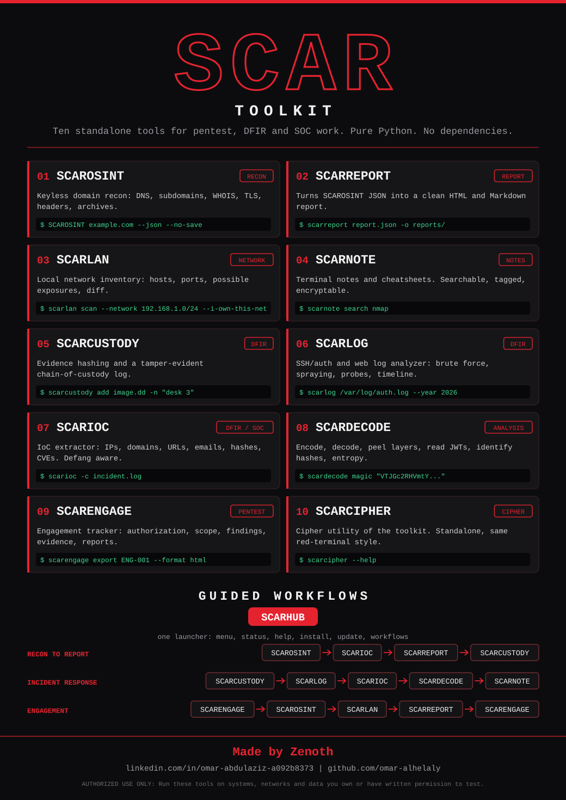

_____ _________ ____ / ___// ____/ | / __ \ \__ \/ / / /| | / /_/ / ___/ / /___/ ___ |/ _, _/ /____/\____/_/ |_/_/ |_|
Security tools built for labs, SOC teams and authorized engagements.
SCARHUB is the home of the SCAR toolkit: command-line tools in 7 classes for recon, forensics, defense, pentest reporting, crypto and more. Offline first, no API keys.
What is SCAR
SCAR is a family of small, readable security tools. Each does one job well, runs on your own machine and passes its output to the next tool. Use one on its own or chain them into a workflow from the first scan to the final report.
Tool classes
Recon & Network
Find out what is exposed on a domain or network you own.
SCAROSINT, SCARLAN, SCARPORTS6Forensics & DFIR
Hash evidence, read logs, extract indicators and build timelines.
SCARCUSTODY, SCARLOG, SCARIOC, SCARTIME, SCARMETA, SCARHASH3Defense & Hardening
Detect drift and weak configuration before someone else does.
SCARBASE, SCARDIFF, SCARHEADERS3Pentest & Reporting
Track engagements, score findings and ship client-ready reports.
SCARENGAGE, SCARREPORT, SCARCVSS4Crypto & Decoding
Learn, decode and audit with tools written from scratch.
SCARCIPHER, SCARDECODE, SCARPASS, SCARJWT3Drone & Mobile
Drone log security and an Android media downloader.
SCARDRONE, SCARGRAB, SCARPERM3Platform & Productivity
The launcher that runs everything and the notes manager.
SCARHUB, SCARNOTE, SCARLISTFeatured tools
SCAROSINT
Keyless reconnaissance for Kali Linux. DNS, web, TLS, archives and registration data for a domain you own, no API keys.
Recon & NetworkSCARLOG
Log analyzer for forensics and defense. Reads SSH/auth and web access logs, builds one timeline and reports observations such as brute force and probe paths.
Forensics & DFIRSCARIOC
Indicator of Compromise extractor. Pulls IPs, domains, URLs, emails, hashes and CVEs from logs and reports. Understands defanged input. Offline, stdlib only.
Forensics & DFIRSCARENGAGE
Penetration test engagement tracker. Client, authorization reference, validated scope, findings, evidence hashes and client-ready reports. No scanning features.
Pentest & ReportingSCARBASE
File integrity baseline and drift checker. Hash a folder, save a baseline, later see exactly what was added, removed or changed.
Defense & HardeningSCARCVSS
CVSS v3.1 base score calculator. Give it a vector, get the score and the severity. Checked against known vectors.
Pentest & ReportingHow the toolkit fits together
Collect
Map what is exposed on assets you own.
SCAROSINT, SCARLANAnalyze
Turn logs and files into timelines and indicators.
SCARLOG, SCARIOC, SCARTIME, SCARMETAProtect
Catch drift, weak headers and weak passwords.
SCARBASE, SCARHEADERS, SCARPASSReport
Score findings and deliver a clean report.
SCARENGAGE, SCARCVSS, SCARREPORT
Toolkit poster
The first ten SCAR tools at a glance: SCAROSINT feeds SCARREPORT, SCARHUB launches them all, and SCARCUSTODY, SCARLOG, SCARIOC and SCARENGAGE cover the forensics and engagement side.
Principles
Authorized use only
Every tool is meant for systems, networks and data you own or have written permission to test.
Offline first
Analysis runs on your machine. No cloud, no accounts, no API keys.
Standard library
Python 3 with the standard library, so a tool runs on a fresh Kali box without installs.
Honest output
Tools report observations and a fix, not scary verdicts. You decide what it means.
Latest updates
v2.1 Accounts, community and credited tools
Login, account area, community chat and a hidden admin page, ready to switch on once the backend is connected.
v2.0 The company site
New Home, About, Solutions, Docs, Updates, FAQ and Security pages.
v2.0 Nine new tools
SCARBASE, SCARPASS, SCARHEADERS, SCARTIME, SCARCVSS, SCARMETA, SCARPORTS, SCARDIFF and SCARHASH.
Work with SCAR
Questions, ideas for a new tool or a security issue to report? Get in touch.